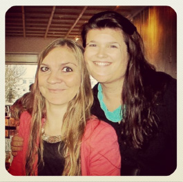

-
#Menntaskolaarin eru bestu árin, skemmtilegra að muna aðeins eftir þeim :) #na_arangri #Seinkun_drykkju #verjum_heilasellur
-

Ég er með #samning við foreldra mina, stend við hann. #samvera #seinkun_drykkju #verjum_heilasellur #interrail #fjallahjol #malaskoli ##bilprofsstyrkur
-
Það er í lagi að byrja ekki að drekka í #menntaskóla. #framfarir #ekkertvesen #böllin_eru_skemmtilegri @felagslif
-
Áfengisneysla og árangur fara ekki saman. Þetta vita allir #alvoruiþrottafolk í dag. #blodsvititar #sex_aefingar_a_viku #framfarir #nadu_lengra #meiripressa2013